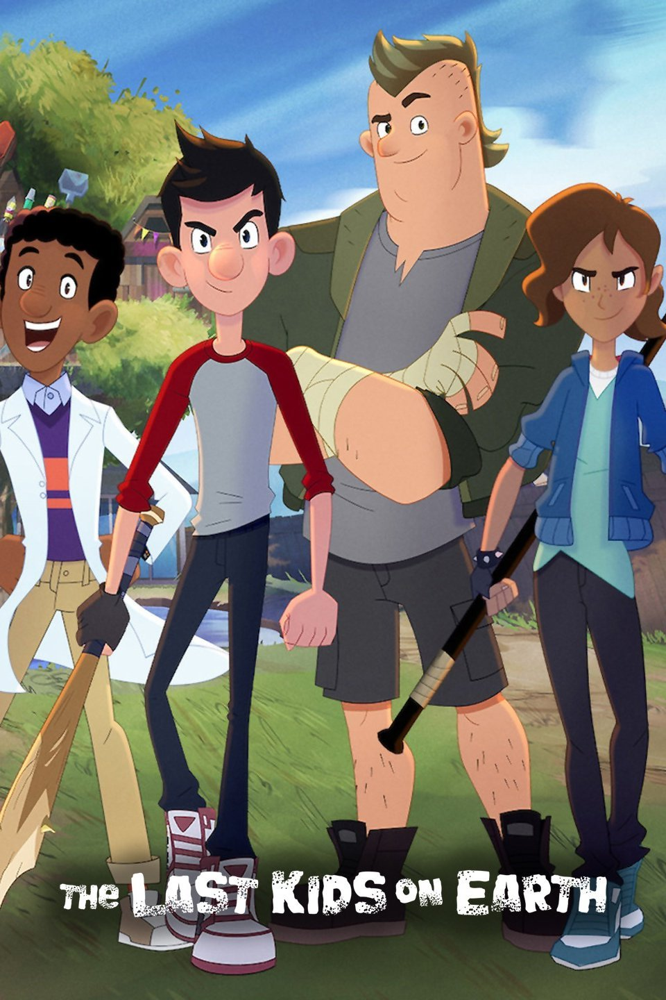

-
Home

The Last Kids on Earth: A Tale of Adventure and Resilience
"The Last Kids on Earth" is a captivating series by Max Brallier that captures the imagination of young readers through its unique blend of adventure, humor, and post-apocalyptic themes. Set in a world overrun by monsters and zombies, the story follows a group of kids who navigate the challenges of survival while maintaining their youthful spirit. This essay explores the themes of friendship, resilience, and the importance of imagination in the face of adversity, all of which contribute to the series' appeal.
Setting the Scene
The narrative begins in a familiar town transformed into a chaotic landscape filled with creatures that once only existed in video games and movies. This post-apocalyptic setting serves as a backdrop for the adventures of the protagonists—Jack Sullivan, Quint Baker, and their friends. The juxtaposition of their mundane childhood experiences with the fantastical elements of a monster-infested world creates an engaging contrast that draws readers in.
Character Development
At the heart of "The Last Kids on Earth" are its relatable characters. Jack, the optimistic and brave leader, embodies the spirit of adventure, while Quint, the brainy strategist, brings intelligence and resourcefulness to the group. Together, they represent the diverse traits that contribute to their survival. As the story unfolds, readers witness their growth and development, not only as individuals but also as a cohesive unit.
Themes of Friendship
Friendship is a central theme in the series. The bonds between the characters are strengthened through their shared experiences, whether they are battling monsters or celebrating small victories. This camaraderie highlights the importance of teamwork and loyalty in overcoming challenges. Readers can easily relate to the characters' dynamics, reflecting their own friendships and experiences.
Resilience in Adversity
The kids’ resilience in the face of adversity is another significant theme. Despite the terrifying environment, they display courage and determination. Their ability to adapt to new situations and find joy in their circumstances serves as an inspiring reminder that hope can persist even in the darkest times. This resilience encourages readers to confront their own challenges with a similar mindset.
The Role of Imagination
Imagination plays a crucial role in the series, allowing the characters to navigate their chaotic world creatively. They transform ordinary items into weapons or tools, showcasing their innovative thinking. This aspect of the story not only entertains but also encourages young readers to embrace their creativity and resourcefulness, essential traits in both fiction and real life.
Humor as a Coping Mechanism
Brallier infuses humor throughout the narrative, making it accessible and enjoyable for younger audiences. The witty dialogue and comedic situations provide levity amid the dire circumstances, illustrating how laughter can serve as a coping mechanism. This balance between seriousness and humor is vital in helping readers process the themes of the story.
The Importance of Community
As the series progresses, the importance of community becomes increasingly evident. The kids encounter other survivors, which emphasizes the value of collaboration and support. Their interactions highlight that even in the most challenging circumstances, connection with others is essential for survival and emotional well-being. This message resonates deeply, especially in a world where community ties can often feel strained.
Exploration of Childhood Freedom
The series also explores the idea of childhood freedom in an extraordinary context. The kids experience a sense of liberation as they explore their deserted town, engaging in activities that would typically be off-limits. This theme resonates with readers, reminding them of the joys of childhood and the importance of embracing adventure and spontaneity.
Conclusion
In conclusion, "The Last Kids on Earth" is more than just a story about survival in a monster-filled world; it is a celebration of friendship, resilience, and imagination. Through the adventures of Jack, Quint, and their friends, readers are reminded of the power of camaraderie and creativity in overcoming life's challenges. Max Brallier’s engaging narrative invites young audiences to reflect on their own experiences while fostering a sense of hope and adventure. As they navigate their own worlds, the lessons from "The Last Kids on Earth" will undoubtedly inspire them to face their challenges with courage and creativity.